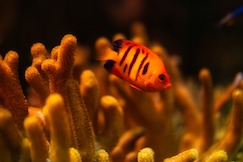

At AquaClarity, we don’t just clean oceans—we empower communities and drive lasting environmental change. What sets us apart from other companies is our holistic approach to ocean conservation. While many focus solely on cleaning, AquaClarity works on prevention, education, and technological innovation. Our products are not just reactive; they’re proactive. From biodegradable filtration systems that trap microplastics to AI-powered sensors that monitor pollution in real-time, we leverage cutting-edge technology to tackle the root causes of ocean pollution.
We believe in collaboration over competition. AquaClarity partners with local organizations, governments, and industries to create sustainable, community-driven solutions. By integrating education and awareness programs into our efforts, we help individuals and businesses reduce their own environmental impact, making ocean conservation a shared responsibility.
When you support AquaClarity, you're investing in a cleaner, healthier planet for future generations. We ensure transparency in our operations, providing regular updates on our progress and the real-world impact of our technologies. Every donation, partnership, or purchase contributes directly to our mission of reducing pollution at scale.
Join us in the fight to protect our oceans. Together, we can eliminate pollution, preserve marine life, and ensure that future generations experience the beauty and vitality of our oceans. Your support makes all the difference.